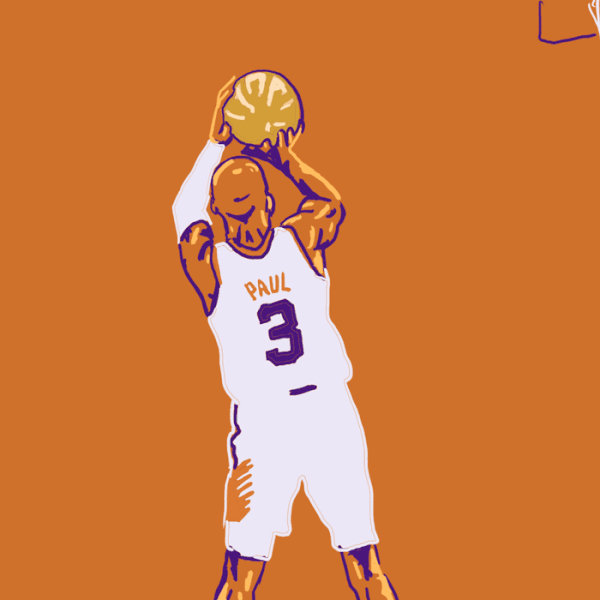

Olá amantes do Basquete! sintam-se em casa. Esse site existe para ser uma forma de expressão de
amor,
tanto do criador, quanto dos usuários para com esse estilo de vida chamado Basquete!

Seja macaco velho ou rookie na quadra, todos temos em comum o conhecimento de que, o basquete é
muito
mais que um esporte.
O Basquete é representatividade, é um símbolo de luta, pode chegar a ser a salvação de algumas pessoas. Clique no botão "Mais que um esporte" para conferir algumas histórias emocionantes de alguns jogadores, que mesmo com imensas dificuldades, com disciplina e determinação alcançaram seu sucesso.
Cadastre-se para ter acesso a uma interface com as cores do seu time favorito da NBA, rankings das temporadas e estatísticas de jogadores, Vem pro racha, irmão!